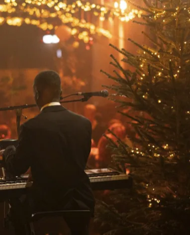
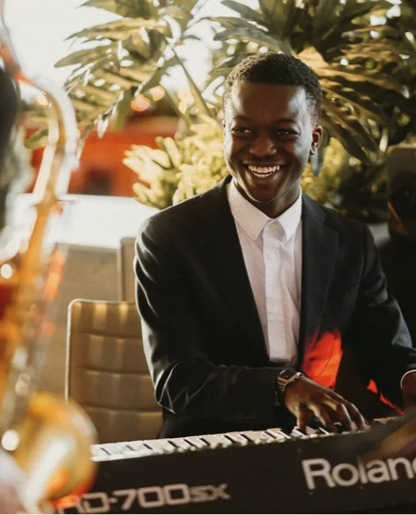
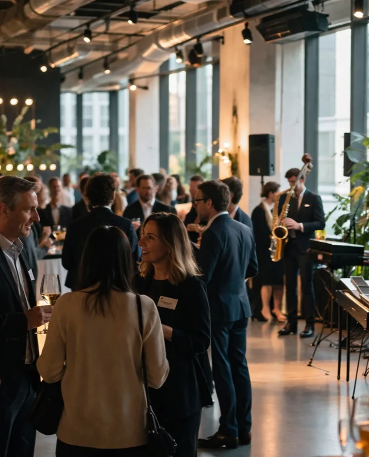

Trouwfeesten
Van ceremonie en welkomstdrink tot het begin van de avond. Wij verzorgen de muzikale rode draad door uw trouwdag, afgestemd op elk moment.
Sinds 2018 · Lier
Live muzikanten die de dansvloer vullen op uw trouwfeest, bedrijfsevent of privéfeest. Volledig verzorgd, op maat.
Eerder speelden wij voor
Relovation is een flexibel live muziekconcept voor stijlvolle events. Geen vaste formule, maar muziek die meebeweegt met het moment, afgestemd op uw publiek, locatie en programma. Wij nemen de volledige muzikale omkadering op ons en denken met u mee.

Van ceremonie en welkomstdrink tot het begin van de avond. Wij verzorgen de muzikale rode draad door uw trouwdag, afgestemd op elk moment.

Stijlvolle live muziek voor recepties, netwerkmomenten en bedrijfsfeesten. Muziek die uw gasten op hun gemak stelt en de juiste toon zet.

Warme live muziek die gesprekken draagt zonder te overstemmen. Voor openingen, ontvangsten en avonden waar sfeer centraal staat.
Elke reden een eigen maat, samen één ritme dat uw avond draagt.
Ervaren, conservatoriumgeschoolde muzikanten met het juiste niveau én de juiste rust.
Repertoire, bezetting en volume afgestemd op uw sfeer en programma.
Voor events tot ±250 gasten, inbegrepen zonder extra gedoe.
Heldere afspraken, stipt aanwezig, professioneel ter plaatse.